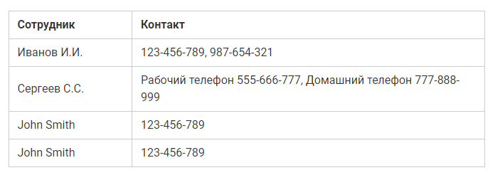
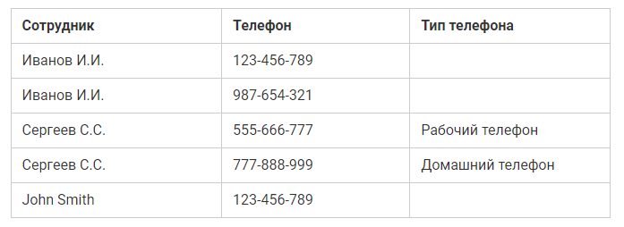
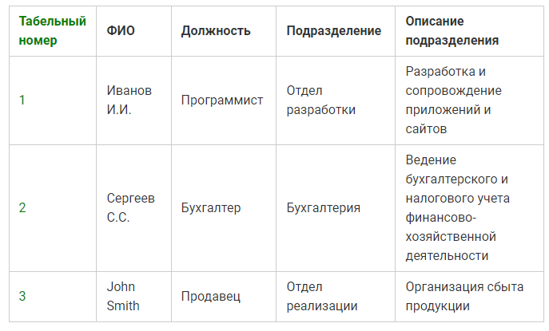
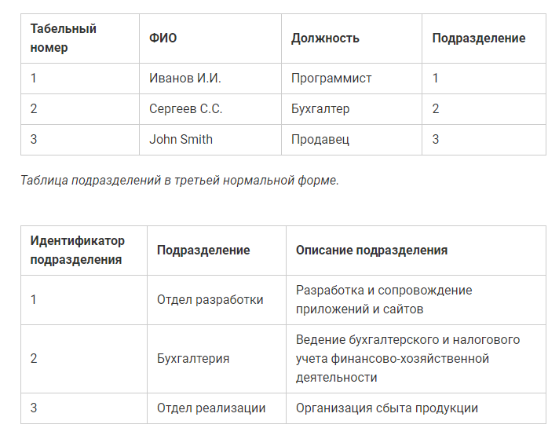

Нормализация(Normalization) - удаление избыточности данных.
Избыточность - это когда одни и те же данные хранятся в базе в нескольких местах, именно это и приводит к аномалиям.
Процесс нормализации – это последовательный процесс приведения базы данных к эталонному виду, т.е. переход от одной нормальной формы к следующей, усовершенствование базы данных.
Декомпозиция – это процесс разбиения одного отношения (таблицы) на несколько.
Ключ – это столбец или набор столбцов, по которым гарантировано можно отличить строки друг от друга, т.е. ключ идентифицирует каждую строку таблицы. Может быть простым(из одного столбца) или составным(из нескольких).
Транзитивная зависимость – это когда неключевые столбцы зависят от значений других неключевых столбцов.
База данных считается нормализованной, если она находится как минимум в третьей нормальной форме (3NF).
Пример несоблюдения
Пример исправления
Если какое-либо поле можно получить по части ключа, то необходимо декомпозировать это поле в отделенную таблицу. И создать связь между таблицами(один к одному и тд.).
Пример несоблюдения
Колонка "Описание подразделения" зависит от колонки "Подразделение". И должна быть вынесена в отдельную таблицу.
Пример исправления
